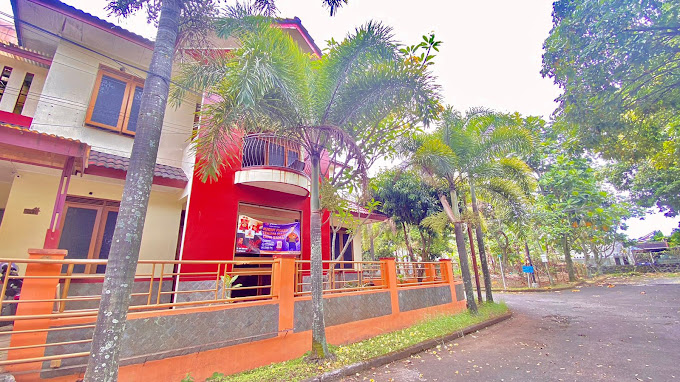

About CRWT Craft
Profile
CRWT Craft Merupakan salah satu home industri yang bergerak di bidang kerajinan kayu, kayu yang di olah saat ini ada berbahan MDF yang mana kerajinan ini bisa di bentuk dan design unik sebagai beberapa produk fungsional seperti kotak tissue, pencil box, card holder, stand phone, tas, lampu tidur, dll. yang membuat spesial adalah produk yang bisa di custom nama dan logo sendiri.
Komitment Lingkungan
Selain ramah lingkungan CRWT juga mendaur ulang kayu menjadi hal kreatif agar tidak terjadinya pencemaran lingkungan.

Visi
- Menjadi sumber utama inspirasi dan pengetahuan untuk para penggemar seni dan kerajinan tangan di seluruh dunia.
- Menciptakan komunitas yang inklusif dan kolaboratif bagi individu yang tertarik dalam bidang kreativitas.
Misi
- Memberikan konten yang berkualitas dan bermanfaat dalam bentuk tutorial, tips, dan artikel seputar seni dan kerajinan tangan.
- Mendorong pertukaran ide dan pengalaman antara anggota komunitas.
- Memfasilitasi pembelajaran dan pengembangan keterampilan kreatif melalui kursus, lokakarya, atau acara lainnya.